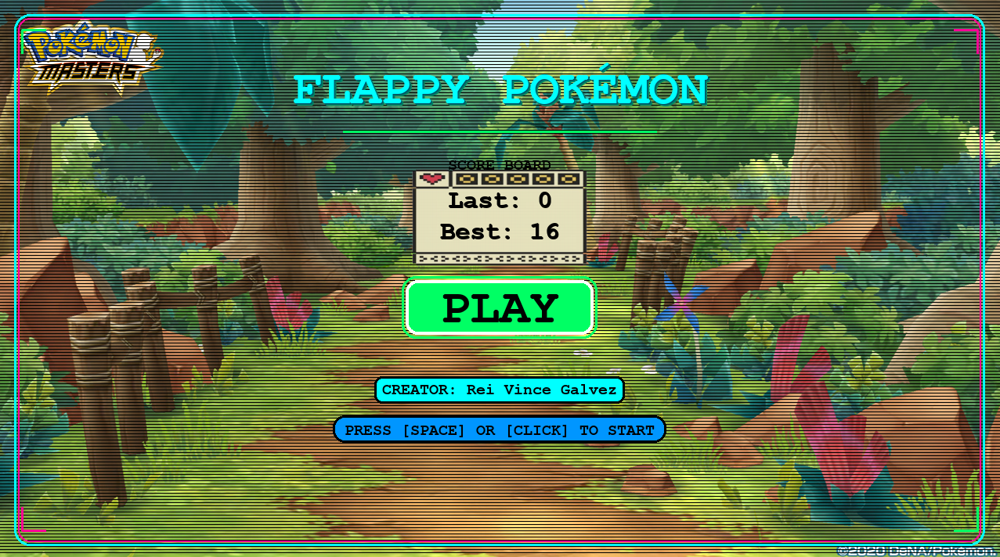
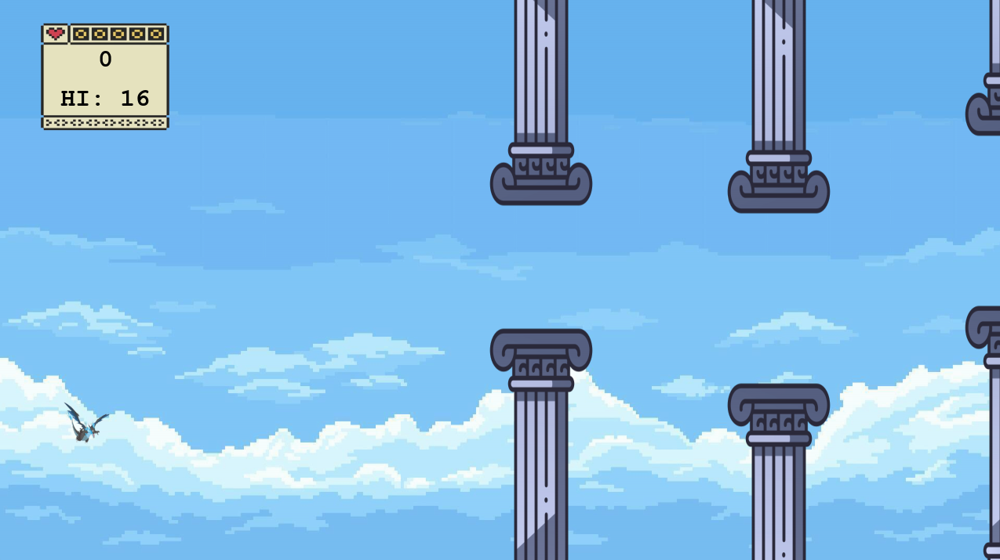
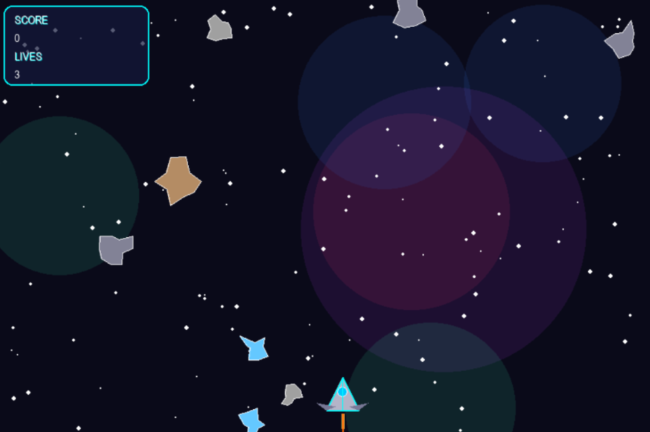
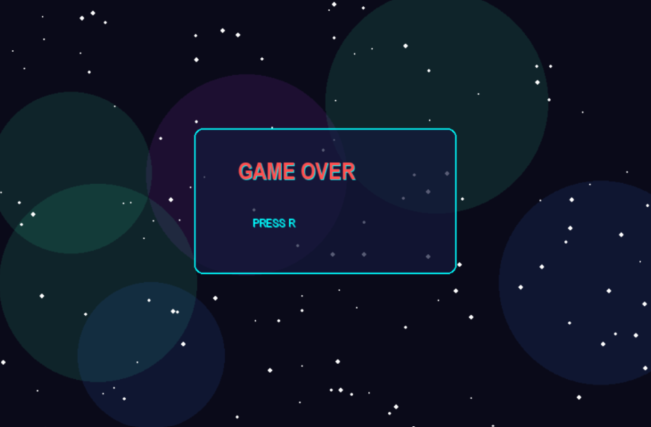
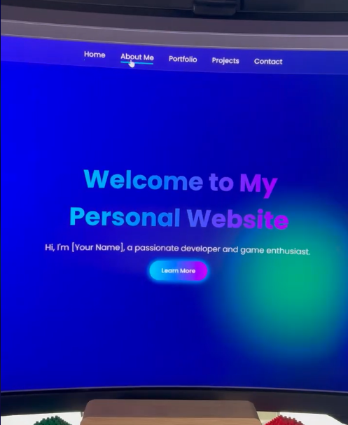
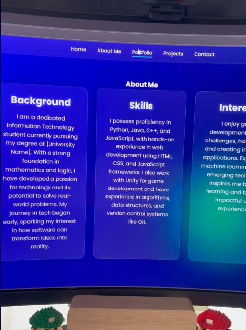
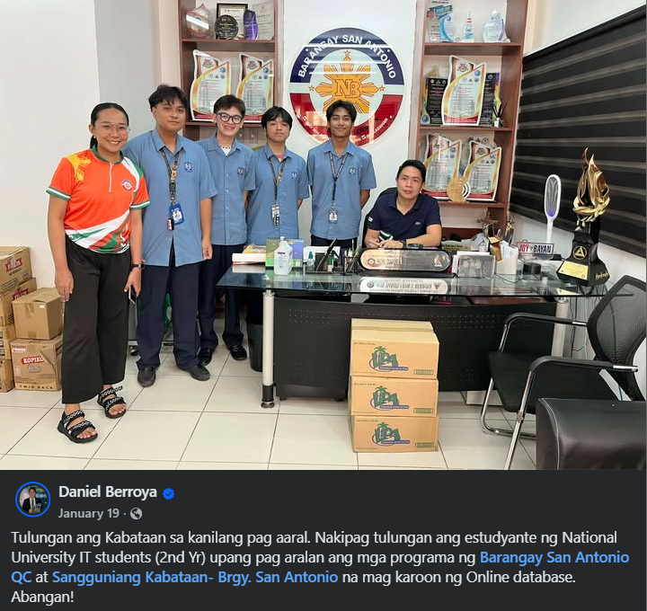
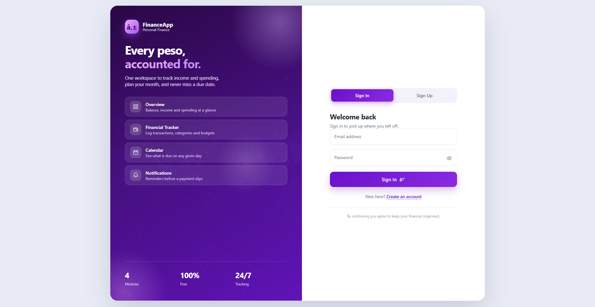

Hi, I'm Rei Vince A. Galvez
BSIT-MWA student at National University Manila, passionate about clean, functional code and creative storytelling through photography and videography.
About
I'm a third-year BSIT student specializing in Mobile and Web Applications at National University Manila. My focus is building responsive web and mobile solutions with proficiency in HTML, CSS, JavaScript, Java, and Python.
Beyond code, I have a strong eye for multimedia and design. When I'm not developing applications, I capture the world through photography and videography — my way of expressing creativity beyond code.
I'm constantly eager to learn new technologies and apply my skills to real-world problems.
Experience & Commissions
Freelance Developer
I actively take commissions to develop custom programs and web applications, ranging from interactive web tools to browser-based games.
Featured Commissions:
Flappy Bird Pokémon Game
A browser-based Flappy Bird clone with a Pokémon theme, featuring custom sprites, score tracking, and progressive difficulty.


Asteroid Game
A classic arcade-style shooter built with JavaScript canvas. The player controls a spaceship and must destroy drifting asteroids while dodging collisions.


Custom Portfolios
Tailored portfolio websites built for clients seeking a modern, responsive online presence. Each design is handcrafted to reflect the client's personal brand and style.


OJT — Municipal Secretary
During my on-the-job training, I served as a secretary at the municipal office. My main duty was writing down all the meetings of the officials, transcribing them word-for-word — their discussions, motions, and decisions — into accurate transcripts and official minutes. I also helped with document preparation and filing to keep the office's daily operations running smoothly.
MSWDO
I also worked for the MSWDO (Municipal Social Welfare and Development Office) for at least one month, where I served as a secretary for the municipality. My responsibilities included creating, processing, and distributing PWD and Senior Citizen ID cards, assisting with document filing, and ensuring smooth administrative operations across the office.
Both roles gave me hands-on experience in public service — communicating with residents, handling official documents, and keeping accurate records. They strengthened my organizational, writing, and administrative skills, which I now bring to every project I work on.
Deployed Projects

SK Management System
Barangay San Antonio, Quezon City, Manila
A fully deployed database management system designed for the Sangguniang Kabataan (SK). The application safely stores and tracks all resident data for the SK community, streamlining local governance and data retrieval processes. Built with PHP and MySQL, it supports real-time resident records, official management, and ID card generation.

Personal Financial Tracker
A web-based financial tracker developed and deployed for personal use. It features a dashboard to log, monitor, and calculate daily allowances and expenditures, helping maintain a healthy budget. With transaction tracking, a calendar view, and financial summaries, it gives a clear overview of spending habits over time.